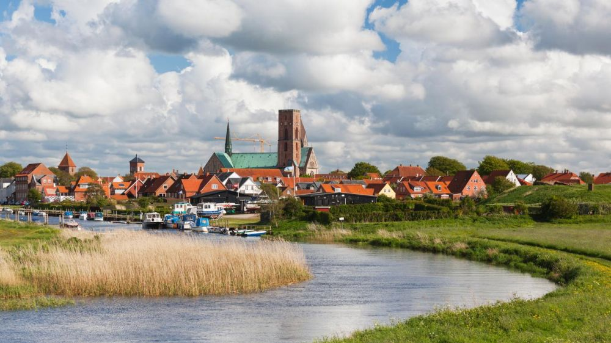

Descoperă Ribe - O călătorie în Danemarca
Ribe este un oraș istoric și pitoresc din Danemarca, oferind o varietate de atracții interesante pentru vizitatori:
-

Catedrala Ribe din Ribe - Bijuterie arhitecturală
Vizitați această catedrală impresionantă, ce datează din secolul al XIII-lea, și admirați arhitectura sa gotică.
-

Centrul Viking Ribe din Ribe - Călătorie în timpul vikingilor
Explorați reconstituiri autentice ale vieții vikingilor și interacționați cu lumea lor istorică.
-

Centrul vechi din Ribe - Străzi medievale
Plimbați-vă pe străzile înguste și pitorești din centrul istoric al orașului Ribe.
-

Muzeul de Artă din Ribe - Artă și cultură
Explorați colecții de artă daneză și internațională în acest muzeu cultural remarcabil.
-

Portul din Ribe - Atmosferă marină
Relaxați-vă în portul pitoresc al orașului Ribe și admirați peisajul marin.
Concluzii
Ribe oferă o călătorie captivantă în timp și cultură, oferind o privire asupra istoriei și tradițiilor daneze.